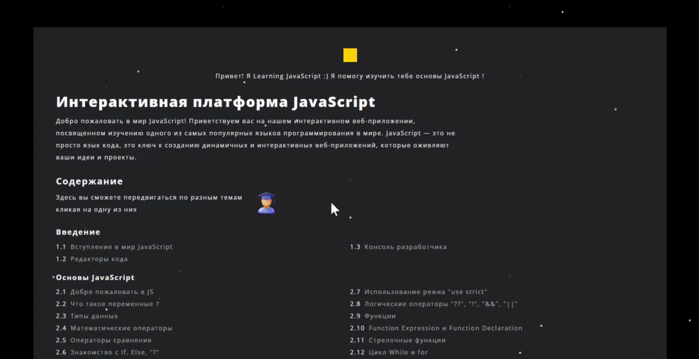
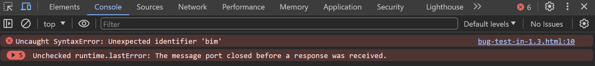

Консоль разработчика
Консоль разработчика в JavaScript, также известная как инструменты разработчика или devtools, является мощным инструментом для отладки, профилирования и анализа кода в браузере.
Открытие консоли разработчика
В большинстве современных браузеров, включая:
• Google Chrome
• Firefox
• Safari
• Microsoft Edge
• Yandex
Консоль разработчика можно открыть, нажав клавишу
F12 или сочетание клавиш
Ctrl+Shift+I, для Mac
Cmd+Opt+I .
В браузерах также можно открыть консоль разработчика, щелкнув правой кнопкой мыши на странице и выбрав "Inspect" - "Исследовать элемент" из контекстного меню.
Использование консоли для отладки
Консоль разработчика предоставляет доступ к выводу ошибок JavaScript, предупреждений и логов.
Ошибки и предупреждения обычно выделяются цветом и сопровождаются ссылкой на строку кода, где произошла проблема.
Откройте страницу скрипт.
В её JavaScript-коде закралась ошибка. Она не видна обычному посетителю, поэтому давайте найдём её при помощи инструментов разработки.
Точный внешний вид инструментов разработки зависит от используемой версии Chrome. Время от времени некоторые детали изменяются, но в целом внешний вид остаётся примерно похожим на предыдущие версии.
• В консоли мы можем увидеть сообщение об ошибке,
отрисованное красным цветом. В нашем случае скрипт содержит
неизвестную команду «bim».
• Справа присутствует ссылка на исходный код bug-test-in-1.3html:10 с
номером строки кода, в которой эта ошибка и произошла.
В консоли можно выполнять JavaScript-код, чтобы проверить или изменить состояние страницы в реальном времени.